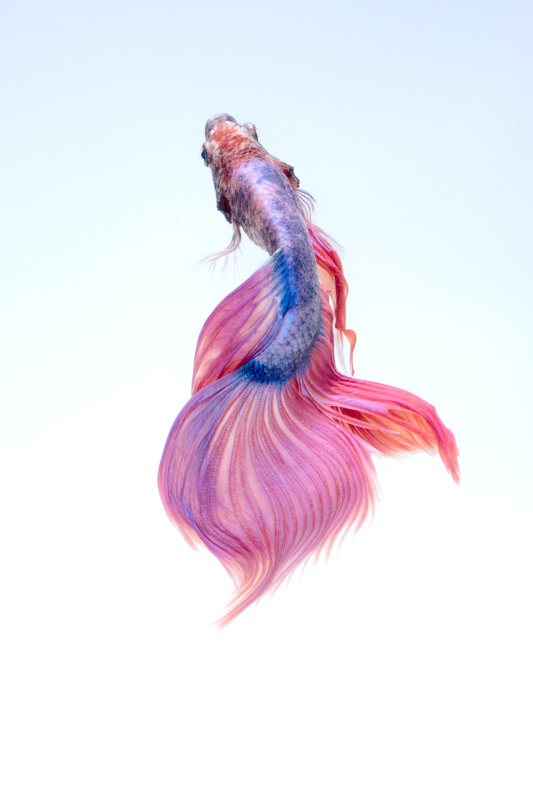
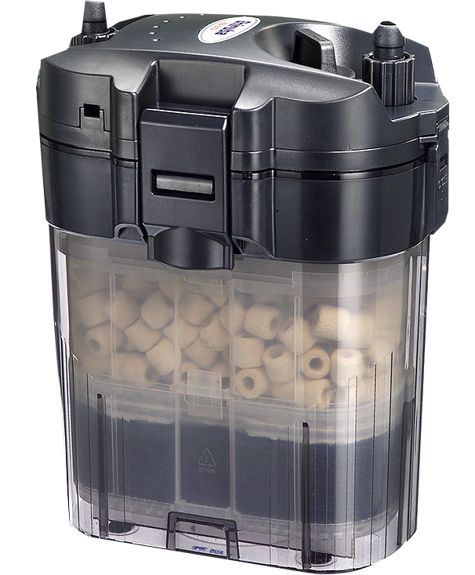
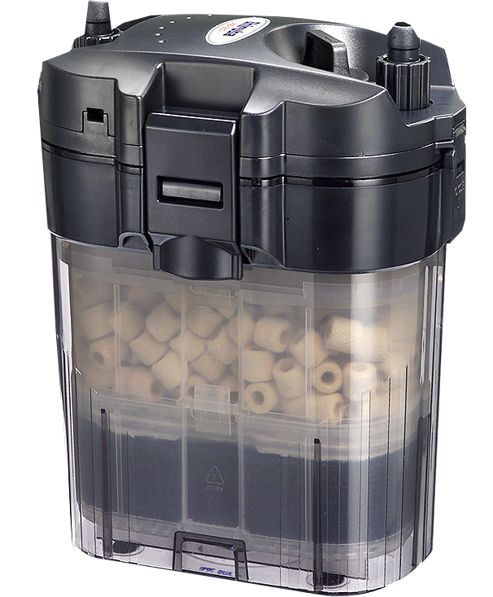

在夜深人靜的凌晨，看著魚兒在水中悠游，彷彿自己也置身在其中，也更加期待明天早晨的到來
鬥魚屬
適合新手或是預算有限的飼主飼養的品種，擁有美艷的外型及極強的生命力，原生種生活於靜水之中，具有迷鰓，可直接呼吸水面空氣
基本上需要養水換水就能夠健康生存，但是需要單獨飼養，屬於極強領地意識的物種

金魚屬
市面上常見且受歡迎的魚種，待盟的金魚是大眾的入門魚種，金魚的特性為食量大，相對排泄量也大，最重要要注意的是缸子的飼養數比例及過濾器好壞是否能支撐金魚們的大吃大喝
.jpg)
慈鯛屬
飼養慈鯛的最大成就感來源就是慈鯛帶著寶寶們一起出巢游泳的時刻，慈鯛性格相對兇悍，公母魚常常有打架致死的情況發生，因此需要大樣遮蔽物來防止雙方經常見面，如大量種植水草
必備器具為巢室，公母魚產卵，建議具備更多飼養經驗再嘗試
米蝦
米蝦是可愛又溫馴的水族明星，飼養相對容易，除了基本的過濾器之外，基本上也不太需要其他設備輔助
建議將蝦缸放置陰涼處，蝦米們懼怕溫度過熱，也盡量不要混養其他魚種，多數市面的觀賞魚都會狩獵米蝦
必備用具
魚缸
魚缸除了是家庭養魚的最佳容器之外，另外一個功能就是讓飼主可以仔細觀察缸內情況
"魚缸可以飼養多少條魚呢?簡單的算法為魚剛升數除以魚體長度，20公升的魚缸大約可以容納十隻2公分的魚"
 

過濾器
過濾器是模擬自然環境的人造設備，魚兒的健康取決於過濾器所建立的消化菌系統是否完善，是養魚最重要的設備之一
市面上最常見的當屬外掛過濾器，經濟實惠，但仍有許多缺點，尤其是聲音吵雜，隨著技術的發展，已經有許多過濾方式，以下簡單比較各種過濾之優劣
外掛過濾器
便宜實惠，因為體積小所以過濾效果最差，聲音較大
圓筒過濾器
cp值最高，是要到進階過濾器的最簡單選擇，濾材清洗方便，但要準備額外空間放置圓筒
上部過濾器
濾材會充分吸收到氧氣，放置於於缸上部，需準備額外空間，且所需配件較多、繁雜
底部過濾器
完全容入於缸當中，最為美觀且安靜，但清理時幾乎等同於重新設置於缸，最為麻煩


濾材
濾材，也就是放置於過濾器內的材料，是保證水質、保護魚隻健康的指標，建議設置兩種濾材，一是過濾雜質排泄物的過濾棉，二是建立消化菌系統的多孔隙材料，如生化棉、石英環等等
選配用具
燈具
燈具是製造整體美感、培養水草的工具，是讓魚缸草皮綠意盎然的必需品，但如果飼主沒有種水草的打算，將魚缸放置於能夠照到陽光的地方即可
打氣機
打氣機通常跟氣泡石一起使用，為魚缸中注入更多氧氣，讓魚隻充滿活力，幫助魚缸的生態系統更為完善，是飼主們飼養更困難的魚種的實用配件
注意事項
1.請勿將自來水直接注入魚缸中，養水是平常很重要的習慣之一，將自來水靜置於家中一到兩天，使其中的氯自然揮發並溶氧，才能將水加入魚缸之中
2.許多觀賞魚、觀賞蝦其實是食物鏈上下層的關係，不同種類的魚對於領地意識強弱也有所不同，在混養之前請飼主們先詢問老闆魚隻混養的安全性